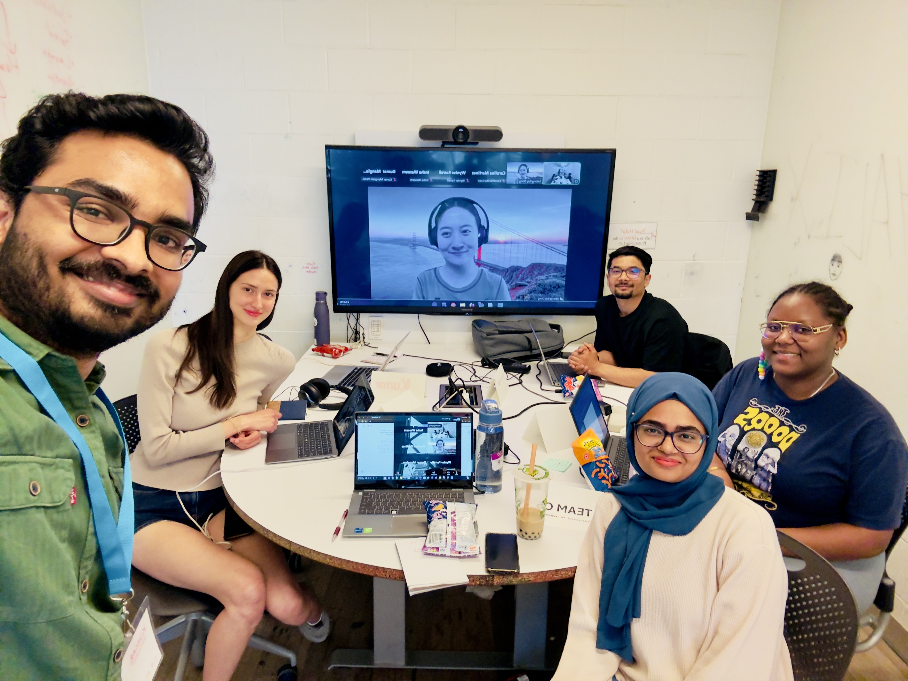

Your Third Space
Creating a clear pathway to independence for youth — because securing housing is only the beginning, not the finish line.

Team Members
Goals & Outcomes
Team C5 set out to address the critical gap between leaving housing insecurity and sustaining independent living — a window that is chronically under-served by existing programs. Rather than attempting to solve homelessness at a systemic level, the team narrowed their focus to youth aged 16 to 26 who have already begun transitioning out of shelters or unstable situations and need practical preparation to stay housed. Research confirmed that long-term housing instability most often begins not at the point of crisis, but in the months immediately after crisis support ends — when young people face budgeting decisions, lease agreements, employment challenges, and emergencies without the financial literacy, mentorship, or community ties to navigate them. The intended outcome was a comprehensive digital and community-based platform — Your Third Space — that would give youth a safe space to practice adult life skills, connect with trained mentors, access an AI coach for on-demand support, and find relevant community services, all before facing those challenges alone. The team also envisioned a physical component: a community internet café that would serve as a tangible gathering point for the platform's users.
Strategies & Processes
Team C5 used the SOUnD framework to ensure their solution remained socially responsible, user-centred, and scalable. The process began with broad stakeholder research and a Five Whys analysis on Miro, which pushed the team past surface-level symptoms — youth lack money, youth lack housing — to two deeper root causes: an educational gap where financial literacy resources are untailored to youth in housing crisis, and a structural gap where support services are deeply fragmented and hard to reach. Early ideation generated a mentorship program and a printed survival guidebook as two separate proposals. Partner feedback from six community organizations — Youth Services Bureau, Better Street, Trek for Teens, Reena, HICC, and 360 Kids — pushed the team toward a more integrated approach. Rather than delivering two standalone tools, the team converged on a single ecosystem that combined both proposals with experiential learning and a resource hub. Work was divided across four-person sub-teams: Insha and Mustafa led technical development through a GitHub-connected workflow, while Wynter and Ghada led research, content, and spatial design. Two senior student managers, Kay and Kumar, maintained sprint accountability through Miro boards, WhatsApp coordination, and timed presentation rehearsals. This parallel structure let research and development progress simultaneously rather than sequentially.
Key Achievements
Team C5 delivered three tangible outputs: a fully functional website serving as the central hub of the platform; a playable Adulting Simulation game — rebuilt midway through the project after the original Bolt-based build failed across multiple browsers, and successfully redeveloped on Lovable — embedded live within the website; and a physical 3D architectural model of the proposed community café space, engineered to exact spatial dimensions by Ghada using a biomedical engineering lens. The platform itself brings together four core features: the Adulting Simulation (budgeting, housing, employment, grocery, and emergency scenarios); a Mentorship Program with both general and specialized mentors for LGBTQ+, Indigenous, and newcomer youth; an AI Coach for on-demand support; and a Resource Hub consolidating housing, employment, mental health, and crisis services. All six community partners validated the core need at Demo Day. The 3D café model extended the pitch from a digital product into a physical community vision, meaningfully strengthening the team's presentation of long-term impact.
Critical Evaluation
The project's strongest design choice was its deliberate scope narrowing: rather than addressing homelessness broadly, it targets the specific and under-served transition window after shelter exit. This made the solution actionable and gave it a realistic user population. The interdisciplinary synthesis — translating qualitative research on financial instability into interactive game mechanics — demonstrated genuine cross-disciplinary integration rather than parallel-track work. The most significant gap is operational. The mentorship program, identified as the platform's core pillar, lacks a defined matchmaking process, mentor vetting criteria, training protocols, and a retention mechanism for volunteer mentors. Without these, the platform cannot safely connect vulnerable youth to strangers and cannot be deployed as-is. Community partners specifically flagged this gap. The AI Coach feature also receives no critical treatment in the report: for a vulnerable population, the ethical and safety boundaries of what an AI coach should handle are significant and unaddressed. A data governance and privacy policy is absent entirely — a legal and ethical gap for a platform collecting data from youth experiencing housing insecurity.
Recommendations
The team's immediate recommendation is to build the operational backbone before any pilot launch: define the mentor matchmaking and safety protocol, establish concrete mentor incentives (academic credit, stipends, or institutional recognition), and draft a data governance policy compliant with PIPEDA and sensitive to the user population's vulnerability. The AI Coach's scope should be formally bounded, with explicit crisis referral pathways built in. From there, expanding institutional partnerships with schools, shelters, and employers will deepen the platform's reach across SDG 4, 8, and 1. Pursuing pilot funding through Ontario Trillium Foundation or Toronto Foundation would enable a controlled first cohort before scaling. Adding impact tracking — housing stability rates, employment outcomes, financial literacy improvements, platform engagement — would build the evidence base needed for wider adoption and sustained funding.
Target SDG Goals
Starting Point
Team C5 began with the broad theme of Transitions to Independence. Initial instincts pointed toward two separate solutions — a mentorship program and a printed survival guidebook — evaluated independently. A Five Whys analysis revealed that the real problem was not a lack of information but a lack of tailored, accessible preparation delivered at the right moment in the transition window, compounded by fragmented service delivery that made resources hard to find when youth needed them most. That reframing made a single integrated platform concept possible.
Major Developments
Three turning points defined the project's trajectory. First, the decision — driven by partner feedback — to integrate mentorship and simulation into a single ecosystem rather than two standalone deliverables. This elevated the solution from a resource to a community. Second, the mid-project technical pivot when the financial literacy game built on Bolt failed cross-browser compatibility testing in Sprint 2: Mustafa rebuilt the entire game on Lovable, a high-stakes recovery that was successfully completed before the final sprint. Third, the addition of the physical 3D café model in Sprint 3, which emerged from Ghada's engineering expertise and Wynter's research on third spaces — expanding the pitch from a digital platform into a hybrid community vision that partners responded to positively.
Challenges
The most acute technical challenge was the Bolt platform failure midway through development. Browser compatibility is a foundational requirement, and catching it in Sprint 2 rather than during initial technical planning compressed the recovery timeline significantly. Embedding the externally-hosted game URL into the website without breaking the UI required sustained effort across Sprints 3 and 4. On the coordination side, Ghada participated fully remotely, requiring deliberate communication infrastructure — daily WhatsApp updates and shared Miro boards — to maintain alignment. The team also spent early sprints working in disciplinary silos before achieving genuine synthesis, delaying integration work until mid-project.
Lessons Learned
Complex social problems cannot be solved within a single discipline, and that synthesis cannot be left to chance — it requires intentional structures that force translation across academic languages. The team learned this most clearly when turning qualitative research on financial instability into coded game mechanics: the breakthrough required Wynter's human stories, Mustafa and Insha's technical logic, and active mediation from project managers to bridge the gap. The team also identified that a compelling prototype is not the same as a deployable product. Partner evaluations revealed how much operational work remains between the delivered artefacts and a service that can actually run. Future iterations would prioritize defining the operational backend — mentor logistics, safety protocols, user journey mapping — alongside the visual and technical deliverables, rather than treating them as a next-phase concern.
Future Direction + Continuation Feasibility
Your Third Space has realistic continuation potential, with meaningful conditions attached. The digital platform is scalable at low marginal cost — its structural advantage. The physical café concept is compelling but carries a substantially higher implementation threshold: real estate, sustained funding, and operational staffing are required, none of which are addressed beyond the 3D model. The immediate next steps are operational: map the full user journey, build an operational appendix addressing mentor safety and matchmaking, and run a small controlled pilot cohort — ideally hosted by one of the six community partners — before any broader scaling. Pursuing funding through Ontario Trillium Foundation or Toronto Foundation, both identified in the team's bibliography, is the most realistic near-term path. Adding structured impact measurement from the first pilot would build the evidence base for future funding and adoption.
Responsible Interest Holders
The six community partners who engaged with Team C5 — Youth Services Bureau, Better Street, Trek for Teens, Reena, HICC, and 360 Kids — are the natural continuation owners, given their existing mandates and their validation of the core need. Post-secondary institutions could support mentor recruitment through service-learning, co-op, or volunteer credit programs. Ontario Trillium Foundation and Toronto Foundation are the most relevant institutional funders for a pilot phase. Social service providers are the most critical stakeholders for Resource Hub maintenance: listings become harmful rather than helpful if not kept current.
Barriers
The most significant barrier is the unsolved mentor retention problem. Volunteer attrition in youth mentorship programs is chronic and well-documented, and the project currently has no concrete incentive model or retention mechanism. Without this, the core pillar of the platform is fragile. The Five Whys analysis itself identified short-term, siloed program funding as a root cause of the problem the project is trying to solve — the project's own sustainability faces that same structural risk. Additional barriers include youth engagement drop-off beyond initial onboarding (no retention mechanism is in place), legal and ethical liability from operating a platform that connects vulnerable youth to mentors and an AI system without formal risk management, and the operational cost of keeping the physical café concept viable over time.